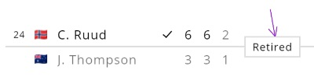

The expected data format (one which can be passed to createBracket) is described in this d.ts file:
export type Data = {
rounds: Round[],
matches?: Match[],
contestants?: {
[contestantId: string]: Contestant
}
}
export type Round = {
name?: string,
}
export type Match = {
roundIndex: number, // 0-based
order: number, // 0-based
sides?: Side[],
matchStatus?: string,
isLive?: boolean
isBronzeMatch?: string,
}
export type Contestant = {
entryStatus?: string,
players: Player[]
}
export type Side = {
title?: string,
contestantId?: string,
scores?: Score[],
currentScore?: number | string,
isServing?: boolean,
isWinner?: boolean
}
type Score = {
mainScore: number | string,
subscore?: number | string,
isWinner?: boolean
}
export type Player = {
title: string,
nationality?: string
}You can add arbitrary extra fields to your data object. It can help you for example when you want to render some custom markup using these functions.
Here is some (almost) real data:
And here's what you get from this data:
This 0-based index defines the order in which matches are rendered within a round.
Match with an index 0 will appear at the very top, below it will be a match with index 1, etc.
Match.order together with Match.roundIndex is what defines the overall position of a match.
Order of items in the matches array makes no difference.
Meant for any general information like 'Scheduled' or 'Cancelled', 'Retired', datetime of an upcoming match etc.
Be careful not to provide very long matchStatuses. Match with both scores and matchStatus may
become
too wide and this will affect the entire layout, leading to inefficient use of screen space.

You may change a background color of matchStatus badge using matchStatusBgColor option
Read here
It could be wonderful to just use a single term "team" but I decided to make it more complex 😎.
"Contestant" is basically "a team that takes part in a tournament".
But contestant may consist of several "Players"... The most obvious case is "doubles" in tennis.
There we
have teams that are not one but two. For this reason Contestant.players property exists and it's an
array.
// example of tennis' doubles
...
matches: [
...
{
roundIndex: 0,
order: 0
sides: [ { contestantId: 'id123' } ]
}
...
]
...
contestants: {
id123: {
players: [ { title: "T. Huey" }, { title: "C. Rungkat" } ]
}
}
Actually the .players array may contain not only 2 but any number of items. All players will be stacked
vertically.
Side is a match-specific data for a contestant: its score, subscore, isWinner etc.
In case you need ONLY team titles (and don't need entry status, nationality or multiple players within a team) it's doable without contestants. Just provide a "title" field for every side of every match and do NOT provide "contestantId".
These props will be rendered as such on the very left.
But, rendered as such, in most cases they won't look great (like in the example above). What's worse, they
are likely to cause problems
with horizontal alignment within a match.
To improve this situation provide getEntryStatusHTML and
getNationalityHTML options where you can set some useful
inline styles, especially width. Or you can prevent entryStatus and nationality from rendering at all by
returning an empty string from these functions.
GetNationalityHTML is where you can set nationality flags.
By default it's also rendered as such. (And that's ok in most cases).
But if for instance you want to make it a link to player's profile, then provide your custom HTML using options.getPlayerTitleHTML.
You can also just change its font-family using playerTitleFontFamily
Side.scores is an array that contains individual Score entries.
Individual entries may refer to a single set in tennis or to a single football match within a
couple
of matches played at a knockout stage.
Points within a game in tennis (like "40:30") should be provided by Side.currentScore (these points
are not a part of Side.scores).
matches: [
{
roundIndex: 0,
order: 0
sides: [
{ // upper side
scores: [
{ mainScore: 7, subscore: 9 },
{ mainScore: 5 }
],
currentScore: 40
},
... // lower side
]
}
]
You can render scores however you like using options.getScoresHTML.
Or just change the scores' font-family using options.scoreFontFamily.
Or just change the horizontal distance between score
pairs.
This field is useful when you render a tournament that ends at some earlier stage than Final.
Example is qualifier events in tennis. They typically terminate at Quarterfinal stage.
To avoid rendering nonexistent Semifinal and Final rounds set skippedLastRoundsCount to 2:
const data = {
rounds: [ {}, {} ],
skippedLastRoundsCount: 2
}